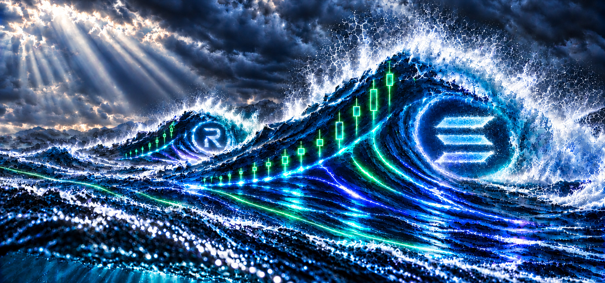

Make waves.
Big presence. Bigger splashes.
Ride the chop.
Catch the swell.
One ocean, many currents. SOLSWELL is an independent community project for everyone navigating the Solana ecosystem together.
Community concept · Prelaunch · Mechanics proposed

SOLSWELL is an independent community meme brand for the Solana ocean. It’s about surviving the chop, reading the current, and riding the next wave together.
Big wallets. Small fins. Different instincts. Same water. The ocean is bigger than any one trade.
The next swell starts with the crew.
Chop happens.
Keep your fins up.
Find your archetype. Bring your energy. Nobody owns the current.
Big presence. Bigger splashes.
Read the current. Pick your moment.
Steady. Resilient. Still here.
The school is the strength.
Every ocean needs somewhere to grow.
Too much energy for the shallow end.
Sol is the trench-tested apex predator of the Solana ocean: calm under pressure, calculated in the chop. He reads the currents, keeps his edge, and hunts the next swell—with the crew in the same water.
Four ways into the SOLSWELL ocean. Open a poster for the full-resolution image and save it for your next post.
Pick a meme. Send it to the group chat. Follow the next wave of SOLSWELL.
Follow SOLSWELL on X ↗SOLSWELL is a community meme concept being prepared for a Shark Tank Onchain pitch. No SOLSWELL token has launched. $SOLSWELL is a proposed ticker.
This website and the linked X profile are the places to follow project updates. Ocean and market language describes the meme’s theme; it is not a promise of returns. Nothing here is financial advice.
Independent community project. Not affiliated with or endorsed by the Solana Foundation.
Plain-language mechanics for review — not a promise, not a live product.
The proposed pair places SOLSWELL alongside JitoSOL, an independent ecosystem asset. No official Solana or Jito affiliation is implied.
Proposed 50/50 collateral across two long positions, for approximately 1.5× combined initial exposure. Final eligibility, leverage and cross-margin behavior require PERPSPAD confirmation.
Intended distributions would come from allocated trading fees and realized perp profits. Rewards depend on real revenue and are never guaranteed.
Everything below is a proposed prelaunch direction, subject to platform and community review.
Eligible-holder distributions are intended to come from allocated trading fees and realized perp profits. No payout has been completed or guaranteed.
The draft basket is SOL 2× LONG plus RAY 1× LONG, with 50/50 collateral and shared cross-margin risk. Either leg can lose value or be liquidated.
No. SOLSWELL remains PRELAUNCH. PERPSPAD pairing, JitoSOL dividend compatibility, RAY eligibility and final leverage still require confirmation.
Review the brand → confirm platform mechanics → publish final disclosures → only then consider a launch. There is no token address, APY, or promised return.